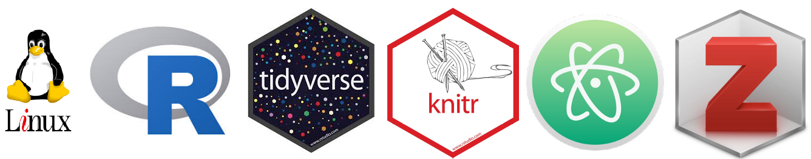

Links
Newspapers articles, news, comments & opinions
CIPER 2019 La demanda por igualdad y los caminos que cuentan con amplio respaldo ciudadano
“Notas sobre los resultados de Chile en la última prueba internacional de formación ciudadana”, con Daniel Miranda en CIPER (Diciembre 2017).
“La meritocracia, ¿una tragedia?”, en El Mostrador (Diciembre 2017).
Comentario al libro Desiguales (Larrañaga, Cociña & Frei, PNUD 2017), en seminario COES-PNUD, Octubre 2017.
“CASEN y Cohesión: oportunidades y precauciones”, con Mauro Basaure en El Mostrador (Septiembre 2016).
“Selección en particulares y la complicidad de los psicólogos” en El Mostrador (Enero 2015).
“De la educación cívica a la educación para la ciudadanía”, en El Mostrador (Septiembre 2014)
Software
I use software compatible with the principles of open science, this is, free and open source.

My operating system is Linux, I use Ubuntu with Gnome-Cairo Dock. A lot of freedom for customization … and looks great.
For general statistical analysis and reporting I work in R, using packages for data science from Tidyverse.
For more specific analysis: I use lme4 for multilevel models and Lavaan for SEM.
I also use R’s reproducibility tools as Knitr & Rmarkdown … before I used to be a fan of LaTeX, but the simplicity and efficiency of Markdown seems unbeatable, even for presentations with tools such as remark & Xaringan .
For writing (and almost for everything so far) I use Atom editor. Just great, and smooth with Git/Github.
Here a good introduction to version control with (plain) Git from: Blischack & Wilson, 2016
Open Science
- Teaching Reproducibility 2022, special issue of the Journal of Statistics and Data Science Education
Create, Publish, and Analyze Personal Websites Using R and RStudio
Ciencia reproducible: qué, por qué, cómo (Rodríguez-Sánchez et al, 2016)
Internal replication of computational workflows in scientific research
SocArxiv, the open archive of the social sciences
The Berkeley Initiative for Transparency in the Social Sciences
Unpaywall chrome extension (Identifica con un ícono cuando el artículo se encuentra libre de pago).
Introduction to reproducible science in R, from Brian Lee Yung Rowe
Data analysis
Teaching resources
Data wrangling, inference & modeling
-Infer: Inferencia estadística en R
Introducción al procesamiento de datos con R para Ciencias Sociales
Missing data and imputation: Missing Values in Clinical Research
-Measurement invariance in the social sciences
Estimating a Parameter from a Random Sample pic.twitter.com/H2KxnLzDyH
— Chelsea Parlett-Pelleriti (@ChelseaParlett) December 15, 2020
Visualization
reactablefmtr: Streamlined Table Styling and Formatting for {reactable}
Designing GGplots - con una muy buena presentación en Xaringan
Reporting, workflows & communication
dataReporter: R package for documenting and creating reports on data cleanliness
Fallibility in Science: Responding to Errors in the Work of Oneself and Others
-Writing a scientific article: A step-by-step guide for beginners
Writing, literature reviews, publication & others
- ver ahora en: https://jc-castillo.com/post/escritura-academica/